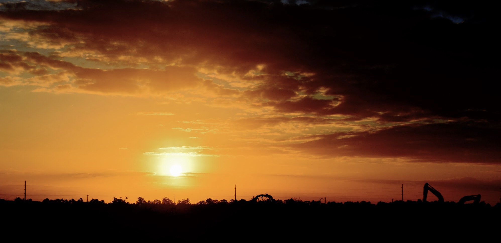
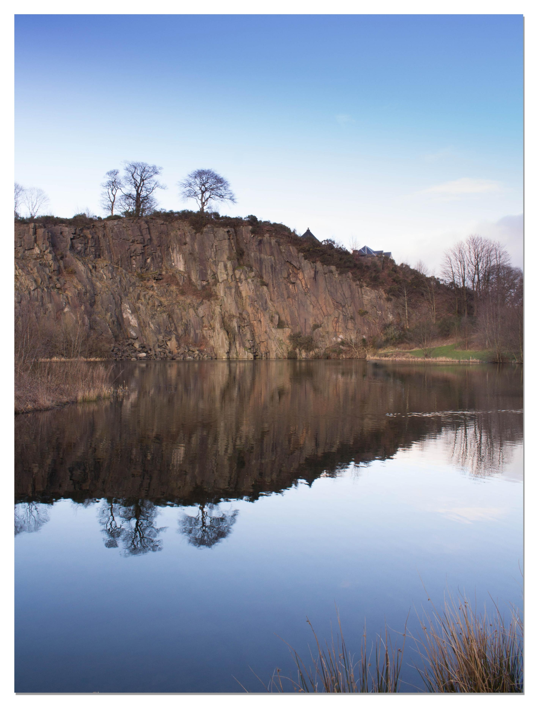

The winners
It has been a wild month, many things happening; but here we are, now that this month has concluded, we ran a vote to choose everyone's favourite photographs that were submitted to this collective; in this short post we will show the most voted photographs.
Team Blue

Most voted image - by member Canadian Fruit Basket
Taking first place of most voted photograph with 5 out of 5 votes, is this piece, taken by our member Canadian Fruit Basket.
> What emotion do you think your photograph conveys?Sense of danger and calm at the same time, sort of like the waterfall scene from Bird Box.
Second most voted image - by member AngelFluffyOokami
This photograph was the second most voted, taking second place with 3 out of 5 votes, taken by member AngelFluffyOookami.
> What emotion do you think this photograph conveys?It gives me a sense of calmness, it makes me feel happiness, it reminds me of other places I've visited, it makes me appreciate nature and take care of it.
Team Red
Tie with second photograph - taken by member Elizabeth
This photograph tied in with another photograph, people voted on it, tallying a total of 3 out of 5 votes
> What emotion do you think your photograph conveys?It was meant to be a sad picture but i dont think it really looks too sad.
Tie with first photograph - taken by member CJWulf
Tied in with the first photograph made by member Elizabeth, it sure is deserving of this position.
>What emotion do you think your photograph conveys?Probably a tranquility of nature regaining what it once had. Im honestly unsure cause I don't think about the emotions most of the time